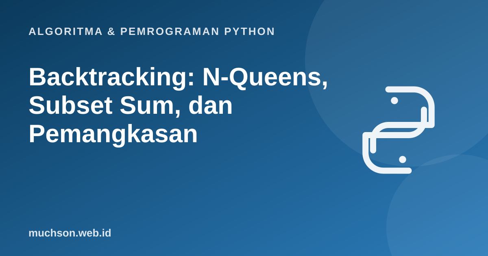

Beranda › Artikel › Algoritma & Pemrograman Python
Algoritma & Pemrograman PythonBacktracking: N-Queens, Subset Sum, dan Pemangkasan
Backtracking menyusun solusi sedikit demi sedikit dan langsung mundur begitu sebuah pilihan pasti tidak mengarah ke jawaban. Ia seperti brute force yang cerdas: tetap menjelajahi pohon kemungkinan, tetapi memangkas cabang yang sia-sia.
Sebaiknya sudah paham: rekursi, list, Menara Hanoi dan permutasi

Setelah membaca dan mencoba materi ini, Anda mampu:
- menggambarkan ruang pencarian sebagai pohon keputusan
- menulis kerangka umum backtracking (pilih, jelajah, batalkan)
- menyelesaikan N-Queens dan subset sum
- menjelaskan pemangkasan dan dampaknya terhadap jumlah simpul yang dikunjungi
Kerangka umum
def cari(keadaan):
if selesai(keadaan):
simpan(keadaan)
return
for pilihan in pilihan_yang_mungkin(keadaan):
if sah(keadaan, pilihan): # pemangkasan: lewati bila sudah pasti gagal
terapkan(keadaan, pilihan) # 1. pilih
cari(keadaan) # 2. jelajahi
batalkan(keadaan, pilihan) # 3. batalkan (backtrack)N-Queens
Letakkan N ratu pada papan N × N sehingga tidak ada dua ratu saling menyerang (sebaris, sekolom, atau sediagonal). Kita menaruh satu ratu per baris dan hanya memilih kolom yang aman.
def n_queens(n):
solusi, kolom = [], [] # kolom[r] = kolom ratu pada baris r
def aman(r, c):
for rr, cc in enumerate(kolom):
if cc == c or abs(cc - c) == r - rr: # sekolom atau sediagonal
return False
return True
def cari(r):
if r == n:
solusi.append(kolom[:])
return
for c in range(n):
if aman(r, c):
kolom.append(c)
cari(r + 1)
kolom.pop() # backtrack
cari(0)
return solusi
for n in [4, 6, 8]:
s = n_queens(n)
print(f"N={n}: {len(s)} solusi, contoh {s[0]}")
papan = n_queens(8)[0]
for c in papan:
print(" ".join("Q" if i == c else "." for i in range(8)))N=4: 2 solusi, contoh [1, 3, 0, 2]
N=6: 4 solusi, contoh [1, 3, 5, 0, 2, 4]
N=8: 92 solusi, contoh [0, 4, 7, 5, 2, 6, 1, 3]
Q . . . . . . .
. . . . Q . . .
. . . . . . . Q
. . . . . Q . .
. . Q . . . . .
. . . . . . Q .
. Q . . . . . .
. . . Q . . . .
Seberapa besar pemangkasan menolong?
from itertools import permutations
def brute_force(n):
hitung = 0
for p in permutations(range(n)): # semua penempatan satu ratu per baris dan kolom
hitung += 1
if all(abs(p[i] - p[j]) != j - i for i in range(n) for j in range(i + 1, n)):
pass
return hitung
def simpul_backtracking(n):
kolom, hitung = [], [0]
def cari(r):
hitung[0] += 1
if r == n: return
for c in range(n):
if all(cc != c and abs(cc - c) != r - rr for rr, cc in enumerate(kolom)):
kolom.append(c); cari(r + 1); kolom.pop()
cari(0)
return hitung[0]
for n in [6, 8]:
print(f"N={n}: brute force memeriksa {brute_force(n)} susunan; backtracking mengunjungi {simpul_backtracking(n)} simpul")N=6: brute force memeriksa 720 susunan; backtracking mengunjungi 153 simpul
N=8: brute force memeriksa 40320 susunan; backtracking mengunjungi 2057 simpul
Subset sum
Dari sekumpulan bilangan, cari himpunan bagian yang jumlahnya tepat T. Setiap elemen punya dua pilihan: ikut atau tidak. Cabang dipangkas bila jumlah sudah melebihi T (untuk bilangan positif).
def subset_sum(angka, target):
angka = sorted(angka)
hasil = []
def cari(i, sisa, terpilih):
if sisa == 0:
hasil.append(terpilih[:]); return
if i == len(angka) or angka[i] > sisa: # pemangkasan
return
terpilih.append(angka[i])
cari(i + 1, sisa - angka[i], terpilih) # ikut
terpilih.pop()
cari(i + 1, sisa, terpilih) # tidak ikut
cari(0, target, [])
return hasil
print(subset_sum([3, 34, 4, 12, 5, 2], 9))[[2, 3, 4], [4, 5]]
Backtracking tidak menjamin cepat. Pada pengetesan terburuk (misalnya tidak ada solusi), ia tetap bisa menjelajahi hampir seluruh pohon. Pemangkasan yang baik dan urutan pilihan yang cerdas sangat menentukan.
1. Berapa solusi N-Queens untuk N = 5?
2. Modifikasi n_queens agar hanya mengembalikan solusi pertama dan berhenti.
3. Gunakan backtracking untuk membangkitkan semua kombinasi kurung seimbang dari n pasang.
4. Mengapa subset_sum memerlukan syarat angka positif untuk pemangkasan angka[i] > sisa?
- Backtracking: pilih, jelajahi, batalkan; mundur saat jalan buntu.
- Pemangkasan menghemat jauh dibanding brute force.
- N-Queens dan subset sum adalah contoh klasik.
- Kasus terburuk tetap eksponensial.
Tanya jawab
Apa bedanya backtracking dan DFS?
Apakah sudoku dapat diselesaikan dengan backtracking?
Mengapa jumlah solusi N-Queens dihitung 92 padahal ada simetri?
Referensi
- Cormen, Leiserson, Rivest, Stein, Introduction to Algorithms (edisi ke-4, MIT Press, 2022)
- Anany Levitin, Introduction to the Design and Analysis of Algorithms (Pearson)
- Sedgewick dan Wayne, Algorithms (edisi ke-4), algs4.cs.princeton.edu
- Dokumentasi Python: itertools.permutations